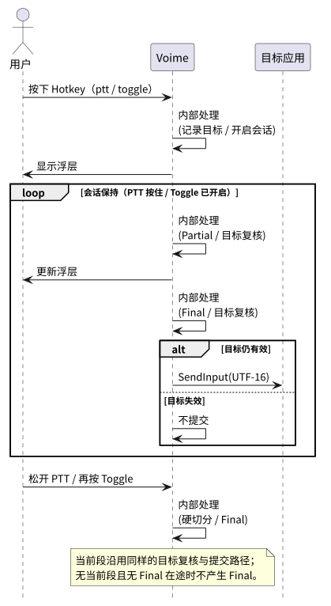
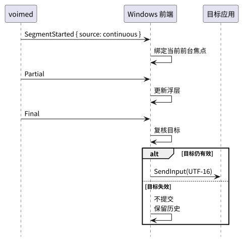
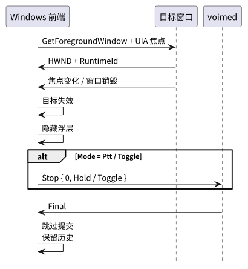
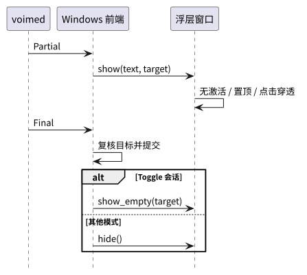
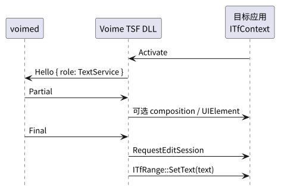

根：README USER CORE PROVIDER BUILD ｜ 本组件：README CORE PROVIDER BUILD ｜ 评估：WINDOWS
状态：P3 已实现；P4（TSF）为可选阶段。本文定义 Windows 前端对用户与 daemon 的行为契约； 平台 API 与安全边界见 PROVIDER，协议消息见 voime-ipc USER。
| 术语 | 定义 |
|---|---|
| Windows 前端 | 独立桌面进程：托盘、热键、目标绑定、浮层与提交；MVP 不注册为系统输入法。 |
| 托盘（tray） | 通知区域图标与菜单；用于配置、状态、启动 / 停止 daemon、退出。 |
| 全局热键 | 系统范围组合键；Toggle 可用 RegisterHotKey，PTT 需要 key-up。 |
| 目标窗口 / 焦点元素 | 语音段开始时前台窗口（HWND）及其 UIA 焦点元素；TSF 阶段为 ITfContext。 |
| 浮层（overlay） | 无激活、置顶、可点击穿透的临时文本窗口；显示 Partial。 |
SendInput | Win32 合成输入 API；MVP 用 KEYEVENTF_UNICODE 注入 UTF-16 文本。 |
| TSF | Text Services Framework；Windows 系统输入法框架。 |
| TIP | TSF 文本服务；keyboard TIP 需要成为当前输入法，speech TIP 的并行能力待验证。 |
| UIPI | 用户界面特权隔离；普通完整性进程不能向高完整性窗口注入。 |
| 命名管道 | Windows 本机字节流端点；Voime 的默认 IPC 传输。 |
| UIA RuntimeId | UI Automation 焦点元素的稳定标识；用于提交前复核同一目标。 |
| 约定 | 内容 |
|---|---|
| 配置所有权 | Mode / Hotkey 由前端拥有，通过 Hello / Configure 同步给 daemon；daemon 不提供独立模式设置。 |
| 热键默认 | 默认使用不占用系统保留键的组合（推荐 Ctrl+Alt+Space）；用户可修改，空值禁用。 |
| 一个语音段一个目标 | 段开始时绑定前台窗口 + 焦点元素；段内不改变；提交前复核。 |
| Partial 只显示 | 浮层显示 Partial；不提交、不进入历史；空 Partial 不清空上一行。 |
| Final 才提交 | 只处理当前目标 segment_id 的 Final；先隐藏 / 清空浮层，再注入。 |
| 失焦不误提交 | 前台窗口、焦点元素或 UIA RuntimeId 变化时不提交；Toggle 停止；文本保留在 daemon 历史。 |
| daemon 不可用 | 放行热键、清空浮层、定时重连；不阻塞普通键盘输入。 |
| 编码 | 内部使用 UTF-8；注入前转 UTF-16；emoji 按代理对处理，长文本分批。 |
| 无持久化 | 不记录按键、音频或识别文本到磁盘；日志只记录错误码与目标变化，不记录文本。 |
| 进程模型 | 每用户桌面进程；不使用 Session 0 服务采集音频；TSF DLL 加载到目标应用进程。 |
| 安全 | 只连接当前用户可访问的命名管道；不读取其他用户会话；不尝试绕过 UIPI。 |





ITfContext::RequestEditSession / ITfRange::SetText；失败不重试注入其他窗口。| 配置项 | 取值 | 默认 | 说明 |
|---|---|---|---|
Mode | ptt · toggle · continuous | ptt | 热键语义与 daemon 自动分段。 |
Hotkey | Windows 组合键 | Ctrl+Alt+Space | PTT 按住、Toggle 切换、Continuous 忽略；空值禁用。 |
StartAtLogin | 布尔 | true | 登录后启动托盘与 daemon。 |
OverlayEnabled | 布尔 | true | 关闭后仍正常提交，仅不显示浮层。 |
%APPDATA%\voime\config.json；字段名与语义固定，托盘右键菜单与设置窗口负责修改。| 项目 | 契约 |
|---|---|
| 目标 | 语音段开始时的前台窗口（HWND）+ UIA 焦点元素 RuntimeId；TSF 阶段为目标 ITfContext。 |
| 目标检查 | 提交前复核前台窗口、焦点元素与 RuntimeId；任一变化则不提交。 |
| 提交 API | MVP：SendInput + KEYEVENTF_UNICODE；TSF：ITfRange::SetText。 |
| 编码 | UTF-8 → UTF-16；emoji 使用代理对；长文本分批注入。 |
| UIPI | 普通完整性进程不向提权窗口注入；不自动提权、不绕过。 |
| 失败 | 不重试其他窗口；隐藏浮层；文本保留在 daemon 历史 / TUI。 |
| 浮层 | 提交前隐藏 / 清空；不依赖浮层存在。 |
消息形状见 voime-ipc USER；本表只说明前端行为。
| 消息 | 前端行为 |
|---|---|
Hello { role: Fcitx, version, config } | 连接命名管道后发送；P1 后角色泛化为 Frontend。 |
Configure | 托盘菜单 / 设置窗口的配置变化时发送。 |
Start / Stop / Toggle | PTT / Toggle 热键触发；携带目标提示与 Hold / Toggle 来源。 |
SegmentStarted | 记录最终 segment_id；Continuous / Toggle 续段绑定当前前台焦点。 |
State | 更新浮层与录音标记。 |
Partial | 更新浮层文本；不提交。 |
Final | 复核目标并注入；隐藏浮层。 |
Error / Bye | 清理状态；按重连策略重连。 |
| 检查 | 契约 |
|---|---|
| 托盘状态 | 显示 daemon 连接、当前 Mode / Hotkey、最近错误码；不显示识别文本。 |
| 日志 | 记录端点、热键注册、目标变化、注入失败；不记录按键内容或识别文本。 |
| doctor（目标） | Windows 版检查命名管道、麦克风隐私、设备、前端进程、模型与 TSF 注册（若启用）。 |
| 托盘诊断 | 托盘菜单 / 设置窗口的“诊断”调用 voime doctor，在消息框显示检查结果。 |
| 场景 | 行为 |
|---|---|
| 普通 Win32 / WinForms / WPF | 通常可用；目标窗口 / 焦点元素明确。 |
| Chromium / Electron / Office | 通常可用；使用 UIA 焦点元素复核。 |
| Windows Terminal / 控制台 | 需实测；部分 TUI 可能拦截合成输入。 |
| UWP / 商店应用 | 需实测；沙箱与焦点模型不同。 |
| 提权窗口 / UAC | 不注入；保留历史；不自动提权。 |
| 游戏 / Raw Input | 不承诺；合成输入可能被忽略或拦截。 |
| 密码框 | 只做 best-effort；不承诺识别输入框语义。 |
| 锁屏 / 安全桌面 | 不可用；不承诺。 |
| 操作 | 契约 |
|---|---|
| 登录启动 | 安装脚本写入当前用户 Run 项启动 voime-tray.exe；不使用 Session 0 服务。 |
| 自动启动 | 托盘连接失败时启动同目录 voimed.exe，并按 2 s / 10 s 间隔重连与重试。 |
| 手动启停 | 托盘菜单与设置窗口提供“启动 daemon”“停止 daemon”；停止通过 voime ctl quit 执行。 |
| 手动诊断 | “诊断”调用 voime doctor 并在消息框显示结果；不修改配置。 |
| 退出托盘 | 关闭浮层与 IPC 连接；daemon 是否继续运行由“停止 daemon”单独控制。 |
Windows 前端使用系统托盘与一个无激活浮层。浮层只使用系统字体与系统前景 / 背景色， 不复制 Linux TUI 的调色板。
| 元素 | 契约 |
|---|---|
| 托盘图标 | 常驻通知区域；左键打开设置窗口，右键菜单包含设置、Mode、Hotkey、Overlay、StartAtLogin、连接状态、启动 / 停止 daemon、诊断、退出。 |
| 设置窗口 | 标题“Voime 设置”；96 DPI 客户端约 440×330；系统字体与系统配色；包含模式下拉框、热键输入框、浮层 / 登录启动复选框、daemon 启停 / 诊断按钮与保存 / 取消。 |
| 浮层 | 无激活、置顶、点击穿透（WS_EX_NOACTIVATE / WS_EX_TOOLWINDOW / WS_EX_TRANSPARENT / WS_EX_TOPMOST）；不进入 Alt+Tab；不抢焦点。 |
| 浮层内容 | 当前 Partial 的纯文本；不显示候选、按钮或历史。 |
| 状态 | 隐藏 / 录音 / 收尾 / 错误；错误只显示简短提示，不显示识别文本。 |
| 主题 | 字体 DEFAULT_GUI_FONT；文字 COLOR_INFOTEXT；背景 COLOR_INFOBK；整体不透明度 235/255；方角，无品牌色。 |
| 几何 | 96 DPI 基准：内边距 10、最小宽度 120、最大文本宽度 560、最小高度 20；随目标窗口 DPI 等比缩放。 |
| 定位 | 优先放在目标光标下方 4 px；无光标矩形时放在目标窗口左下外侧；限制在当前显示器工作区内。 |
| 无浮层 | OverlayEnabled=false 或浮层创建失败时仍正常提交。 |